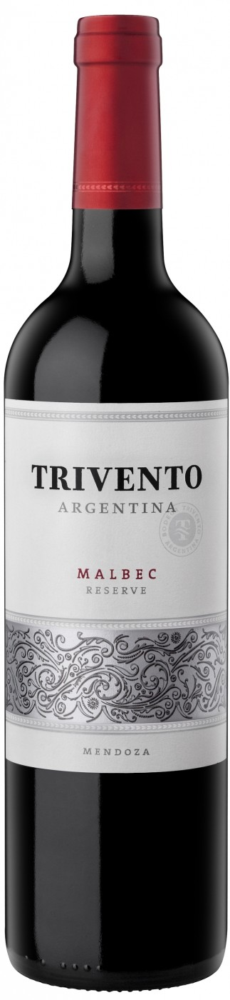

Вино Trivento
 КупитьОписание товара
| Вино: | Красное, сухое |
| Регион: | Аргентина, Мендоса, Майпу |
| Производитель: | Trivento |
| Крепость: | 13.2% |
| Объем: | 0.75 л |
| Виноград: | Мальбек: 100% |
Характеристики товара
- Цвет
Цвет вина — ярко-красный с фиолетовым отливом. - Вкус
Вкус вина средней плотности, с округлыми танинами, мягко перетекающими в длительное ягодное послевкусие. - Аромат
В аромате вина — тонкие нотки лесных ягод, красных фруктов (вишни) и черного перца. - Гастрономические сочетания
Это вино идеально подойдет для мяса, приготовленного на гриле.
Подробное описание товара
Вина линейки "Трибу" максимально отражают сортовой характер винограда и свойства терруара. Виноград для создания этих вин собирается вручную и транспортируется на винодельню в маленьких ящиках для сохранения качества ягод. Урожай для "Tribu" Malbec собирают с виноградников в Тупунгато и Ривадива в начале марта. После удаления гребней и измельчения проводится холодная мацерация. Затем 30% сусла проходит винификацию методом "термофлэш", а остальное — традиционным методом в течение 8 дней в резервуарах из нержавеющей стали при 26ºC. Затем следует малолактическая ферментация и фильтрация. Потенциал хранения вина составляет 2 года.